Code
import numpy as np
import matplotlib.pyplot as plt
from matplotlib.patches import FancyBboxPatch, FancyArrowPatch, Rectangle, Circle, Polygon
from matplotlib.lines import Line2D
plt.rcParams.update({"figure.figsize": (12, 6), "font.size": 11})
Synthetic Aperture Radar (SAR) sends its own microwave pulses and records the echoes, so it images day and night and through clouds.
Twenty-four notebooks take a radar image from the echo to a map, in three mission blocks: Sentinel-1, RADARSAT, and NISAR.
geolattice.rsense.sar.A SAR image is not a photograph: it is formed in slant range, brightness reflects surface roughness, geometry and moisture rather than colour, and every pixel carries speckle. This notebook introduces the radar chapter (09_03): how SAR works, how to interpret brightness and geometry, what geolattice.rsense.sar provides, and hands-on examples with real and simulated Sentinel-1 data.
geolattice.rsense.sar (src/rsense/sar) for a task.geolattice.rsense.sarRADAR stands for RAdio Detection And Ranging. A radar image is made by an active sensor. The sensor sends out microwave pulses, usually looking sideways from an aircraft or satellite, and records the energy that bounces back, called backscatter. Each pixel stores the strength (amplitude) of that echo. In complex data it also stores the phase, and the echo’s timing fixes the pixel’s position.
Optical images record reflected sunlight. Radar is different in a few ways:
| Appearance | Scattering mechanism | Typical surface |
|---|---|---|
| Very dark | Specular (mirror-like) reflection away from sensor | Calm water, roads, airport runways |
| Medium, textured | Surface scattering | Bare or rough soil, grassland |
| Bright in cross-pol (HV/VH) | Volume scattering | Forest canopy, dense crops |
| Very bright | Double-bounce (corner reflector) | Buildings, flooded forest, ships |
Two other features are typical of radar images:
1. Real Aperture Radar (RAR / SLAR) - This is early side-looking airborne radar. - Resolution is limited by the physical length of the antenna, so it is coarse at long range. - Today it is mainly of historical interest. It was used for regional mapping in cloudy tropics, such as Brazil’s RADAM project.
2. Synthetic Aperture Radar (SAR) - SAR uses the platform’s motion and signal processing to simulate a very long antenna. This gives fine resolution regardless of altitude. - Common products: - SLC (Single Look Complex): amplitude plus phase, in slant-range geometry. It is the input for interferometry and polarimetry. - GRD (Ground Range Detected): amplitude or intensity only, multilooked, and projected to ground range. This is the standard “radar picture,” for example Sentinel-1 GRD. - Imaging modes trade coverage against resolution: - Spotlight: finest detail, smallest area. - Stripmap: a balance of the two. - ScanSAR / TOPS: wide swath, coarser resolution. - Applications: flood mapping, oil spill and ship detection, sea-ice monitoring, land cover classification, and deforestation alerts.
3. Polarimetric SAR (PolSAR) - Images are acquired in single-, dual-, or quad (full) polarization. - Quad-pol data can be split into scattering mechanisms using decompositions such as Pauli, Freeman-Durden, or H/A/α. - Applications: crop type mapping and crop growth stage, forest biomass, wetland classification, soil moisture retrieval, and urban structure.
4. Interferometric SAR (InSAR) - InSAR uses the phase difference between two SAR images of the same area taken from slightly different positions or at different times. - Products: - Interferogram: colored fringes, where each fringe is one cycle of phase. - Coherence image: shows how stable the surface was between the two dates. - DEM: for example SRTM and TanDEM-X. - Differential InSAR (DInSAR) and time-series methods (PS-InSAR, SBAS) measure ground motion at millimeter to centimeter scale. - Applications: - Earthquake and volcano deformation. - Land subsidence from groundwater pumping or mining. - Landslides. - Stability of infrastructure such as dams, bridges, and railways. - Glacier flow. - Coherence-based damage and change mapping.
5. Polarimetric Interferometric SAR (PolInSAR) and Tomographic SAR (TomoSAR) - PolInSAR combines polarimetry and interferometry. TomoSAR uses many passes to resolve vertical structure. - Applications: forest canopy height, 3D forest structure, biomass, and 3D urban reconstruction. These are mainly done with P- and L-band, as in the ESA BIOMASS mission.
6. Multi-temporal SAR stacks - A dense time series is built from repeat passes. Sentinel-1, for example, revisits every 6 to 12 days. - Applications: - Crop phenology and planting or harvest detection, such as rice mapping in monsoon Asia. - Change detection. - Flood progression. - Near-real-time disaster response.
7. Other radar imaging systems - Weather (Doppler) radar is ground-based (e.g., NEXRAD). Its reflectivity and velocity images show rainfall intensity, storm structure, and tornado signatures. - Ground-Penetrating Radar (GPR) produces subsurface profiles called radargrams. Uses include utility location, archaeology, soil horizons, and pavement inspection. - Radar altimetry and scatterometry are mostly profiles or coarse grids rather than fine images. They measure sea surface height, ice sheet elevation, and ocean wind vectors. - Bistatic and multistatic SAR use separate transmitter and receiver. TanDEM-X uses this configuration for single-pass DEM generation.
| Mission | Band |
|---|---|
| Sentinel-1 | C |
| RADARSAT Constellation | C |
| TerraSAR-X / TanDEM-X | X |
| ICEYE, Capella | X (commercial) |
| ALOS-2 PALSAR-2 | L |
| NISAR | L + S |
| BIOMASS | P |
The diagram below shows a side-looking SAR acquisition: the satellite moves along azimuth, illuminates a ground swath with a short physical antenna, and a long synthetic aperture is formed by combining echoes from many positions. Range is across-track.
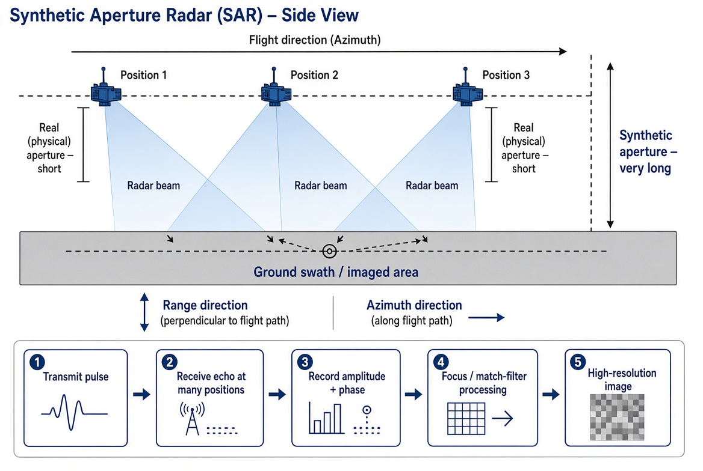
A radar satellite transmits microwave pulses toward the Earth and measures a portion of the energy scattered back toward its antenna. Unlike an optical sensor, it does not need sunlight, and microwave observations can generally be acquired through clouds.
The basic sequence is:
Transmit → interact with the surface → scatter → receive the echo → process the signal → form an image.
A SAR pixel is not a conventional photograph of an object. It represents a measurement derived from the returned electromagnetic signal, after radar focusing and image processing.
import numpy as np
import matplotlib.pyplot as plt
from matplotlib.patches import FancyBboxPatch, FancyArrowPatch, Rectangle, Circle, Polygon
from matplotlib.lines import Line2D
plt.rcParams.update({"figure.figsize": (12, 6), "font.size": 11})# Figure 1: satellite transmission and return echo
fig, ax = plt.subplots(figsize=(12, 6))
ax.set_xlim(0, 12); ax.set_ylim(0, 7); ax.axis("off")
# Earth surface
ax.fill_between([0, 12], [1.1, 1.1], [0, 0], color="#9caa75", alpha=.8)
ax.plot([0, 12], [1.1, 1.1], lw=3, color="black")
ax.text(10.7, .55, "Earth's surface", ha="center", weight="bold")
# Satellite
sat = FancyBboxPatch((1.0, 5.2), 1.8, .8, boxstyle="round,pad=.12", fc="#c7d5e8", ec="#23395d", lw=2)
ax.add_patch(sat)
ax.text(1.9, 5.6, "SAR satellite", ha="center", va="center", weight="bold")
ax.add_patch(Rectangle((.2,5.35),.65,.5,fc="#426b9a",ec="black"))
ax.add_patch(Rectangle((2.95,5.35),.65,.5,fc="#426b9a",ec="black"))
ax.plot([1.9, 2.35], [5.2, 4.65], color="black", lw=2)
ax.add_patch(Polygon([[2.15,4.65],[2.55,4.65],[2.35,4.25]], closed=True, fc="#777777", ec="black"))
# Target
ax.add_patch(Circle((7.5,1.12),.13,color="#6b4f2a"))
ax.text(7.5,.45,"Target on ground",ha="center")
# Transmit and return paths
ax.add_patch(FancyArrowPatch((2.4,4.35),(7.35,1.35),arrowstyle="-|>",mutation_scale=18,lw=2.5,color="#d97706"))
ax.text(4.2,3.35,"Transmitted microwave pulse",rotation=-31,color="#9a4d00",ha="center")
ax.add_patch(FancyArrowPatch((7.65,1.4),(2.55,4.55),connectionstyle="arc3,rad=-.18",arrowstyle="-|>",mutation_scale=18,lw=2.5,color="#1677b8"))
ax.text(5.0,2.15,"Returned backscatter (echo)",rotation=29,color="#125b8b",ha="center")
ax.text(9.2,5.5,"The sensor measures the\nreturned signal's amplitude\nand phase.",ha="center",va="center",
bbox=dict(boxstyle="round,pad=.5",fc="#f3f4f6",ec="#555"))
ax.set_title("Figure 1. Active radar remote sensing: transmit and receive",fontsize=15,weight="bold")
plt.show()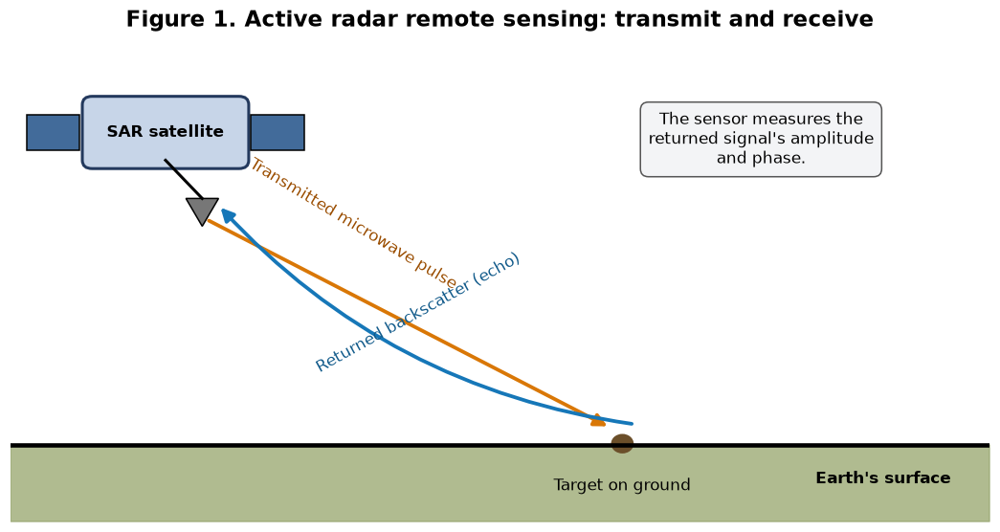
The radar pulse travels from the antenna to the target and then back to the antenna. If the measured round-trip time is (t), the slant range is:
\[ R = \frac{c\Delta t}{2} \]
where \(c \approx 3 \times 10^8\) m/s is the speed of light. The division by two is necessary because the measured time includes both the outgoing and returning paths.
For example, a round-trip time of approximately 4.67 milliseconds corresponds to a slant range of about 700 km.
c = 299_792_458 # speed of light, m/s
round_trip_time = 4.67e-3
slant_range = c * round_trip_time / 2
print(f"Slant range: {slant_range/1000:,.1f} km")Slant range: 700.0 kmThe returned signal depends on surface roughness, dielectric properties (including moisture), geometry, wavelength, polarization, and incidence angle. Four scattering mechanisms are especially useful when interpreting SAR.
# Figure 2: four simplified scattering mechanisms
fig, axes = plt.subplots(2, 2, figsize=(13, 8))
titles = ["A. Specular reflection (smooth surface)", "B. Diffuse scattering (rough surface)",
"C. Volume scattering (vegetation)", "D. Double-bounce scattering (trunk + water)"]
for ax, title in zip(axes.flat, titles):
ax.set_xlim(0, 10); ax.set_ylim(0, 6); ax.axis("off")
ax.plot([0.5,9.5],[1,1],color="#6b7280",lw=2)
ax.set_title(title,weight="bold")
# specular
ax=axes[0,0]
ax.plot([1,9],[1,1],color="#2563eb",lw=5)
ax.add_patch(FancyArrowPatch((3,5),(5,1.25),arrowstyle="-|>",mutation_scale=15,color="#d97706",lw=2))
ax.add_patch(FancyArrowPatch((5,1.25),(7.5,5),arrowstyle="-|>",mutation_scale=15,color="#d97706",lw=2))
ax.text(5,.35,"Smooth water / surface",ha="center")
ax.text(7.4,4.7,"Reflected away",ha="center",color="#9a4d00")
# diffuse
ax=axes[0,1]
rng=np.random.default_rng(4)
x=np.linspace(.8,9.2,35); y=1+0.18*np.sin(x*4)+0.08*rng.normal(size=len(x))
ax.plot(x,y,color="#8b6b45",lw=2)
ax.add_patch(FancyArrowPatch((4,5),(5,1.4),arrowstyle="-|>",mutation_scale=15,color="#d97706",lw=2))
for end in [(3,3.7),(5.5,4.3),(7.4,3.1),(6.2,2.7)]:
ax.add_patch(FancyArrowPatch((5,1.4),end,arrowstyle="-|>",mutation_scale=13,color="#1677b8",lw=1.5))
ax.text(5,.35,"Rough soil / uneven surface",ha="center")
# volume
ax=axes[1,0]
ax.plot([1,9],[1,1],color="#6b7280",lw=2)
for xx,hh in [(2,2.8),(3.3,3.6),(4.6,2.7),(6,3.5),(7.4,2.9),(8.4,3.4)]:
ax.plot([xx,xx],[1,hh],color="#477a45",lw=3)
ax.add_patch(Circle((xx,hh),.38,color="#78a96b",alpha=.8))
ax.add_patch(FancyArrowPatch((4.8,5.5),(5.4,3.6),arrowstyle="-|>",mutation_scale=15,color="#d97706",lw=2))
for start,end in [((5.4,3.6),(4.5,4.8)),((5.4,3.6),(6.4,4.7)),((4.5,4.8),(3.8,3.7))]:
ax.add_patch(FancyArrowPatch(start,end,arrowstyle="-|>",mutation_scale=12,color="#1677b8",lw=1.5))
ax.text(5,.35,"Leaves, branches, stems",ha="center")
# double bounce
ax=axes[1,1]
ax.plot([1,9],[1,1],color="#2563eb",lw=5)
ax.plot([6,6],[1,4.6],color="#7c5b3f",lw=7)
ax.add_patch(FancyArrowPatch((3.1,5.2),(5.8,1.2),arrowstyle="-|>",mutation_scale=15,color="#d97706",lw=2))
ax.add_patch(FancyArrowPatch((5.8,1.2),(6,4.3),arrowstyle="-|>",mutation_scale=15,color="#d97706",lw=2))
ax.add_patch(FancyArrowPatch((6,4.3),(3.3,5.4),arrowstyle="-|>",mutation_scale=15,color="#1677b8",lw=2))
ax.text(3.1,.35,"Water",ha="center"); ax.text(7.2,3.7,"Tree trunk / wall",ha="center")
fig.suptitle("Figure 2. Conceptual radar scattering mechanisms",fontsize=16,weight="bold")
plt.tight_layout()
plt.show()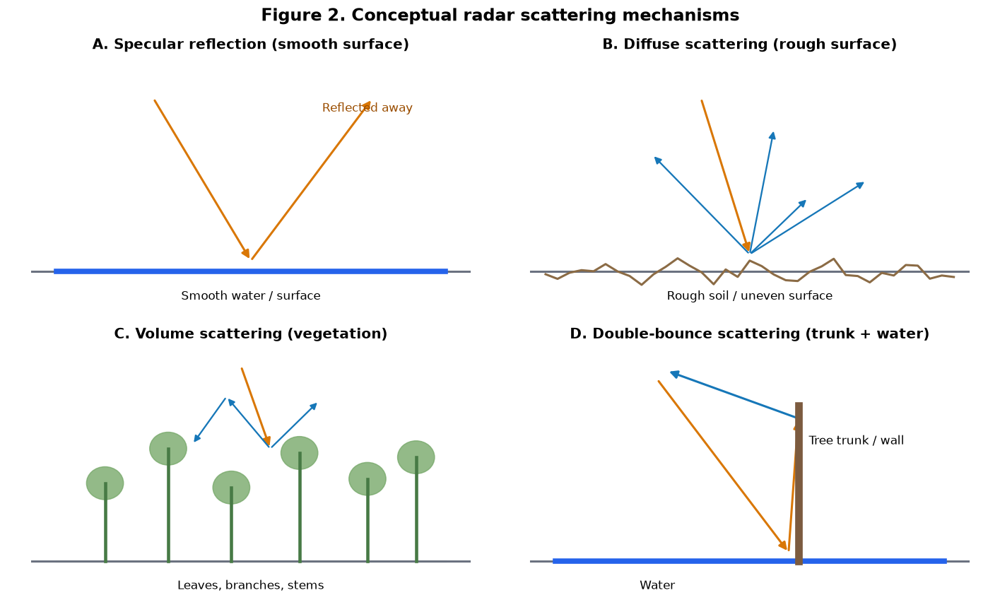
A smooth surface can reflect most incident energy away from the sensor. Calm open water therefore often appears dark in SAR imagery.
A rough surface redirects energy in many directions. Some energy returns to the sensor, often producing a stronger response than a smooth surface.
Microwave energy interacts with components inside vegetation, such as leaves, branches, and stems. Multiple scattering events can contribute to the returned signal.
A signal can reflect between two approximately perpendicular surfaces, such as water and a vertical tree trunk or building wall. Flooded vegetation and some urban targets can therefore produce strong returns.
Important: These are simplified physical models. Real pixels often contain mixtures of scattering mechanisms.
A side-looking SAR image has two principal image directions:
The incidence angle is measured between the incoming radar beam and the surface normal (a line perpendicular to the local surface).
# Figure 3: range/azimuth geometry
fig, ax = plt.subplots(figsize=(12,6))
ax.set_xlim(0,12); ax.set_ylim(0,7); ax.axis("off")
ax.fill_between([0,12],[1.1,1.1],[0,0],color="#a6b77b")
ax.plot([0,12],[1.1,1.1],color="black",lw=2)
# satellite and orbit direction
ax.add_patch(FancyBboxPatch((1,5.4),1.6,.65,boxstyle="round,pad=.1",fc="#c7d5e8",ec="#23395d"))
ax.text(1.8,5.72,"Satellite",ha="center",va="center",weight="bold")
ax.add_patch(FancyArrowPatch((.6,6.35),(3.2,6.35),arrowstyle="-|>",mutation_scale=16,lw=2,color="#1677b8"))
ax.text(1.9,6.55,"Flight direction (azimuth)",ha="center",color="#125b8b")
# radar beam and ground points
ax.add_patch(FancyArrowPatch((2.3,5.35),(7.5,1.2),arrowstyle="-|>",mutation_scale=17,lw=2.5,color="#d97706"))
ax.text(4.7,3.6,"Range direction",rotation=-38,color="#9a4d00")
ax.scatter([4.4,7.5,10.2],[1.1,1.1,1.1],s=70,c=["#3b82f6","#16a34a","#ef4444"])
ax.text(4.4,.55,"Near range",ha="center"); ax.text(7.5,.55,"Target",ha="center"); ax.text(10.2,.55,"Far range",ha="center")
# normal and angle
ax.plot([7.5,7.5],[1.1,4.0],ls="--",color="#555")
ax.text(7.7,3.1,"Surface normal",rotation=90,va="center")
ax.text(6.4,2.1,"Incidence angle θ",rotation=0,ha="center")
ax.set_title("Figure 3. SAR image geometry: range and azimuth",fontsize=15,weight="bold")
plt.show()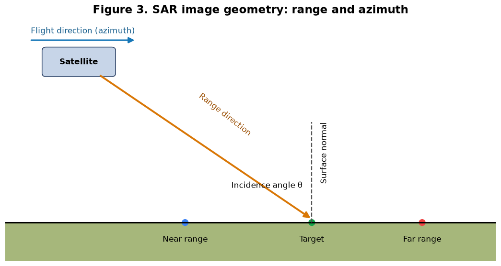
A satellite moves along its orbit while repeatedly transmitting pulses. A ground target is observed from multiple positions along the flight path. The processor combines the phase history of these echoes to focus the target in azimuth.
This is called a synthetic aperture: the motion of the platform is used to synthesize the effect of a much longer antenna.
The simplified diagram below shows a target being illuminated from several successive satellite positions.
# Figure 4: synthetic aperture concept
fig, ax = plt.subplots(figsize=(12,6))
ax.set_xlim(0,12); ax.set_ylim(0,7); ax.axis("off")
positions=[1.5,3.5,5.5,7.5,9.5]
for i,x in enumerate(positions):
ax.add_patch(FancyBboxPatch((x-.45,5.4),.9,.45,boxstyle="round,pad=.06",fc="#c7d5e8",ec="#23395d"))
ax.text(x,5.62,f"P{i+1}",ha="center",va="center",fontsize=9)
ax.add_patch(FancyArrowPatch((x,5.35),(6,1.3),arrowstyle="-|>",mutation_scale=12,
lw=1.3,color="#d97706",alpha=.75))
ax.scatter([6],[1.15],s=120,c="#dc2626",zorder=5)
ax.text(6,.55,"Same ground target",ha="center",weight="bold")
ax.add_patch(FancyArrowPatch((1.2,6.25),(10,6.25),arrowstyle="-|>",mutation_scale=16,lw=2,color="#1677b8"))
ax.text(5.6,6.5,"Satellite motion along track",ha="center",color="#125b8b")
ax.text(6,3.3,"Echoes from multiple\npositions are combined\ncoherently by SAR processing",
ha="center",va="center",bbox=dict(boxstyle="round,pad=.5",fc="#f3f4f6",ec="#555"))
ax.set_title("Figure 4. Synthetic aperture: combining observations along the orbit",fontsize=15,weight="bold")
plt.show()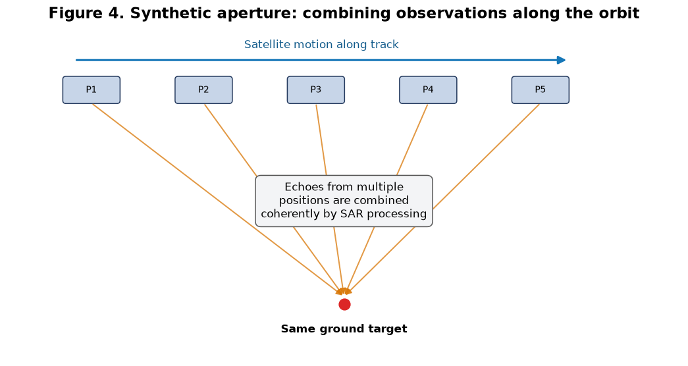
A focused SAR image is a two-dimensional array. Its rows and columns correspond to azimuth and range samples (the exact orientation depends on the product convention and display).
A simplified image grid:
# Figure 5: synthetic SAR image with range and azimuth axes
rng = np.random.default_rng(12)
h,w = 180,260
img = rng.normal(0.25,0.06,(h,w))
# create illustrative regions: water, fields, urban strip, vegetation
img[:, :55] *= .18
img[35:125, 65:150] += .16
img[20:160, 175:220] += .28
img[75:105, 220:255] += .08
img = np.clip(img,0,1)
fig, ax = plt.subplots(figsize=(12,5))
ax.imshow(img,cmap="gray",vmin=0,vmax=.75,aspect="auto")
ax.set_xlabel("Range direction → (near range to far range)")
ax.set_ylabel("Azimuth direction ↓ (along-track)")
ax.set_title("Figure 5. Example of a synthetic grayscale SAR-like image (not real satellite data)")
ax.text(25,18,"Dark water",color="white",ha="center",bbox=dict(fc="black",alpha=.55,ec="none"))
ax.text(108,55,"Agricultural fields",color="white",ha="center",bbox=dict(fc="black",alpha=.55,ec="none"))
ax.text(197,35,"Bright urban area",color="white",ha="center",bbox=dict(fc="black",alpha=.55,ec="none"))
plt.show()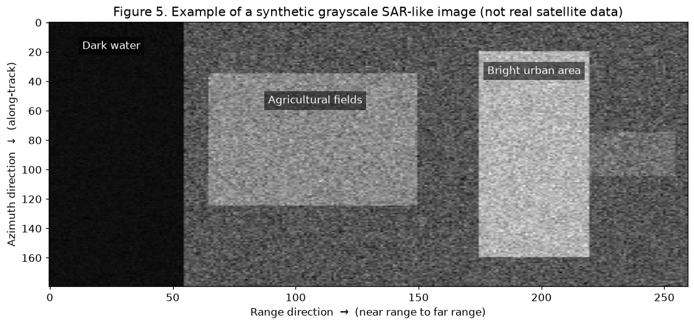
A SAR display often uses grayscale intensity. Dark pixels generally represent lower returned power; bright pixels represent higher returned power. Brightness is not a unique land-cover label: the same surface type can look different as moisture, roughness, incidence angle, polarization, and geometry change.
| Surface or target | Common interpretation | Important qualification |
|---|---|---|
| Calm open water | Often dark | Wind, waves, and nearby structures can brighten it |
| Bare soil | Variable gray | Strongly affected by roughness and moisture |
| Crops | Variable | Depends on crop growth stage, water, and polarization |
| Forest | Often moderate | Can be bright or dark depending on structure and wavelength |
| Buildings | Often bright | Orientation and shadowing matter |
| Flooded vegetation | Sometimes bright | Double-bounce can increase the return |
For a calibrated backscatter coefficient (^0):
\[ \sigma^0_{dB}=10\log_{10}(\sigma^0) \]
A negative dB value is normal. For example, a linear value of 0.01 becomes -20 dB.
linear_backscatter = np.array([0.001, 0.003, 0.01, 0.03, 0.1, 0.3])
db = 10 * np.log10(linear_backscatter)
for x, y in zip(linear_backscatter, db):
print(f"σ⁰ = {x:0.3f} -> {y:6.2f} dB")σ⁰ = 0.001 -> -30.00 dB
σ⁰ = 0.003 -> -25.23 dB
σ⁰ = 0.010 -> -20.00 dB
σ⁰ = 0.030 -> -15.23 dB
σ⁰ = 0.100 -> -10.00 dB
σ⁰ = 0.300 -> -5.23 dB# Figure 6: linear backscatter to dB conversion
x = np.logspace(-3,0,300)
y = 10*np.log10(x)
fig, ax = plt.subplots(figsize=(9,5))
ax.plot(x,y,lw=2)
ax.set_xscale("log")
ax.set_xlabel("Linear backscatter coefficient (σ⁰)")
ax.set_ylabel("Backscatter (dB)")
ax.set_title("Figure 6. Conversion from linear backscatter to decibels")
ax.grid(True,alpha=.3)
plt.show()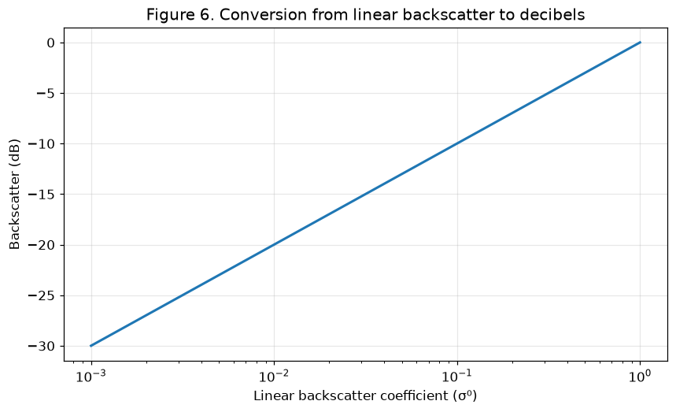
The relationship between wavelength \(\lambda\), frequency \(f\), and the speed of light \(c\) is:
\[ \lambda = \frac{c}{f} \]
Longer wavelengths generally interact with larger vegetation components and can penetrate farther into some vegetation canopies than shorter wavelengths. This is not a guarantee of penetration to the ground: canopy density, water content and structure all matter.
| Feature | X-band (~3 cm) | C-band (~6 cm) | L-band (~23 cm) |
|---|---|---|---|
| Penetration | Very low | Limited | High |
| Main interaction | Canopy surface | Upper canopy | Volume + ground |
| Resolution potential | Highest | High | Moderate |
| Sensitivity to biomass | Low | Moderate | High |
| Best environment | Urban, bare surface | Agriculture, floods | Forests, dense vegetation |
Rule of thumb: see the surface clearly → X-band; all-rounder → C-band; look into or through vegetation → L-band.
# Figure 7: approximate radar band wavelengths
bands = {"X band": 0.03, "C band": 0.056, "L band": 0.23, "P band": 0.70}
fig, ax = plt.subplots(figsize=(10,4.8))
names=list(bands.keys()); vals=list(bands.values())
bars=ax.bar(names,vals)
ax.set_ylabel("Approximate wavelength (m)")
ax.set_title("Figure 7. Approximate wavelengths of common SAR bands")
ax.grid(axis="y",alpha=.25)
for b,v in zip(bars,vals):
ax.text(b.get_x()+b.get_width()/2,v+.015,f"{v*100:.1f} cm",ha="center")
plt.show()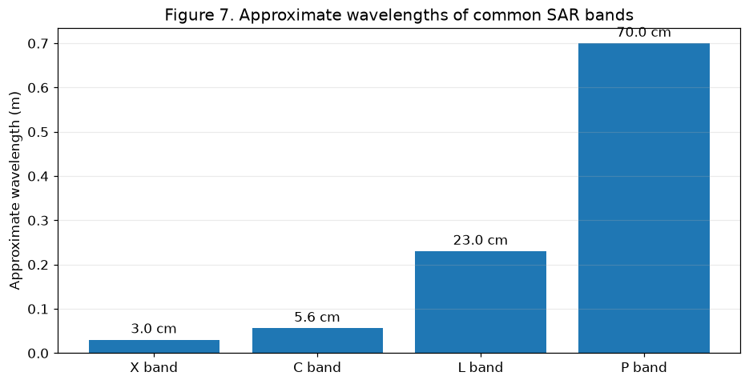
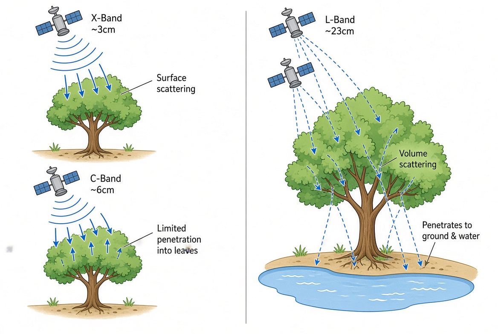
Polarization describes the orientation of the transmitted and received electric field (VV, VH, HH, HV).
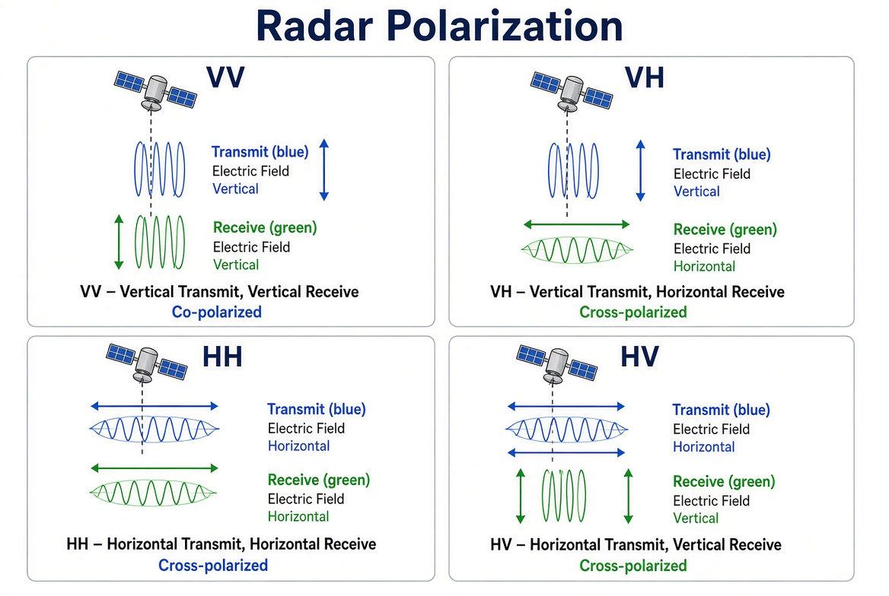
| Polarization | Transmit | Receive | Type | Main interaction | Typical appearance |
|---|---|---|---|---|---|
| VV | Vertical | Vertical | Co-polarized | Surface scattering (soil, water, roads) | Bright on smooth surfaces |
| HH | Horizontal | Horizontal | Co-polarized | Surface + double-bounce (buildings, trunks) | Bright on man-made structures |
| VH | Vertical | Horizontal | Cross-polarized | Volume scattering (vegetation, forests) | Brighter in forests and crops |
| HV | Horizontal | Vertical | Cross-polarized | Volume scattering (same as VH) | Similar to VH |
Co-polarized channels (VV and HH) send and receive in the same orientation. They respond strongly to surface scattering; HH is especially sensitive to double-bounce.
Cross-polarized channels (VH and HV) send in one orientation and receive in the perpendicular orientation. Energy is rotated by multiple scattering in volumes, so forests and dense crops appear brighter.
Practical use: VV for soil moisture, water and agriculture; HH for urban structure; VH/HV for vegetation density. Many missions acquire dual or quad polarisation so these channels can be combined.
A Sentinel-1 workflow commonly includes the following steps. The exact sequence depends on the product, application, and software.
Important: Speckle filtering and dB conversion are not substitutes for radiometric calibration or terrain correction.
# Figure 9: processing workflow
steps = [
"Sentinel-1\nGRD / SLC",
"Orbit\ninformation",
"Thermal-noise\nremoval",
"Radiometric\ncalibration",
"Speckle\nfiltering*",
"Terrain\ncorrection",
"Geocoded\nbackscatter",
"Analysis:\nflood / crops / change"
]
fig, ax=plt.subplots(figsize=(14,3.8))
ax.set_xlim(0,14); ax.set_ylim(0,3); ax.axis("off")
for i,s in enumerate(steps):
x=.2+i*1.72
box=FancyBboxPatch((x,.95),1.4,1.0,boxstyle="round,pad=.08",fc="#e8eef6",ec="#36536f",lw=1.3)
ax.add_patch(box); ax.text(x+.7,1.45,s,ha="center",va="center",fontsize=9)
if i<len(steps)-1:
ax.add_patch(FancyArrowPatch((x+1.42,1.45),(x+1.68,1.45),arrowstyle="-|>",mutation_scale=12,color="#555"))
ax.text(7,.35,"*Optional and application-dependent",ha="center",style="italic")
ax.set_title("Figure 9. Simplified SAR preprocessing and analysis chain",fontsize=15,weight="bold")
plt.show()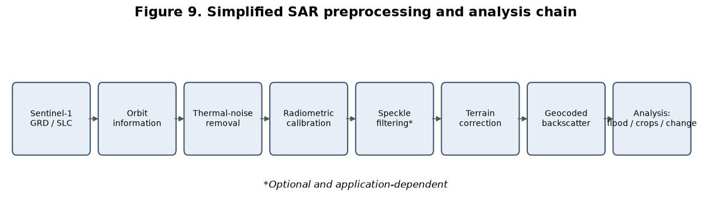
Open water often appears dark in SAR because a smooth water surface reflects much of the radar energy away from the sensor. A simple change-detection measure is:
\[ \Delta VV = VV_{flood} - VV_{pre-flood} \]
A large negative change can indicate newly inundated smooth surfaces. But this is not a universal flood rule: flooded vegetation may brighten due to double-bounce scattering, and wind-roughened water may be bright.
A robust flood workflow should consider: - Pre-flood and flood-season images with comparable acquisition geometry. - VV and VH channels. - Permanent water masks. - Terrain and slope. - Vegetation and urban areas. - Temporal consistency and validation data.
# Figure 10: illustrative pre-flood and flood images
rng=np.random.default_rng(8)
base=np.clip(rng.normal(.48,.10,(150,220)),0,1)
pre=base.copy()
# river channel
for r in range(150):
c=int(35+0.35*r+12*np.sin(r/15))
pre[r,max(0,c-7):min(220,c+7)] = .10
flood=base.copy()
for r in range(150):
c=int(35+0.35*r+12*np.sin(r/15))
flood[r,max(0,c-18):min(220,c+18)] = .08
# some bright flooded vegetation patches
flood[45:95,135:165] = np.clip(flood[45:95,135:165]+.28,0,1)
fig,axes=plt.subplots(1,3,figsize=(14,4.5))
axes[0].imshow(pre,cmap="gray",vmin=0,vmax=1); axes[0].set_title("Pre-flood (illustrative)")
axes[1].imshow(flood,cmap="gray",vmin=0,vmax=1); axes[1].set_title("Flood period (illustrative)")
change=flood-pre
im=axes[2].imshow(change,cmap="RdBu_r",vmin=-.6,vmax=.6); axes[2].set_title("Flood minus pre-flood")
for ax in axes: ax.axis("off")
fig.colorbar(im,ax=axes[2],fraction=.046,pad=.04,label="Illustrative intensity difference")
fig.suptitle("Figure 10. Conceptual SAR flood change example — simulated data, not Sentinel-1",fontsize=14,weight="bold")
plt.show()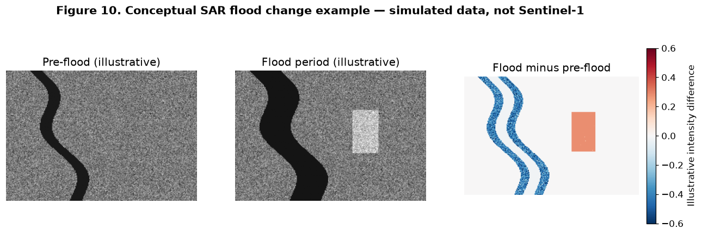
Open water may have low backscatter, but water beneath upright stems, trunks, or buildings can create double-bounce paths. The resulting return may be stronger than before flooding. This is why flood mapping in wetlands, mangroves, and crop fields should not rely exclusively on a single low-backscatter threshold.
| Characteristic | SAR | Optical |
|---|---|---|
| Energy source | Active microwave transmission | Reflected sunlight |
| Night acquisition | Yes | Normally no |
| Cloud sensitivity | Generally low | High |
| Surface roughness | Directly influences scattering | Less directly measured |
| Moisture sensitivity | Often strong | Mostly indirect |
| Vegetation information | Structure and water-related interactions | Spectral and biochemical properties |
SAR and optical data are complementary. Combining Sentinel-1 with Sentinel-2 can improve land-cover, crop, and flood analyses.
# Figure 11: conceptual side-by-side optical and SAR appearance
rng=np.random.default_rng(22)
n=160
opt=np.zeros((n,n,3))
sar=np.zeros((n,n))
# fields
for r in range(n):
for c in range(n):
if c < 48:
opt[r,c]=[.12,.28,.55]; sar[r,c]=.12
elif 48 <= c < 115:
opt[r,c]=[.35,.55,.22]; sar[r,c]=.38+rng.normal(0,.06)
else:
opt[r,c]=[.48,.43,.36]; sar[r,c]=.68+rng.normal(0,.10)
# water strip
opt[65:90,:]=[.10,.30,.70]; sar[65:90,:]=.08
opt=np.clip(opt,0,1); sar=np.clip(sar,0,1)
fig,axes=plt.subplots(1,2,figsize=(10,4.8))
axes[0].imshow(opt); axes[0].set_title("Optical-like color illustration")
axes[1].imshow(sar,cmap="gray",vmin=0,vmax=1); axes[1].set_title("SAR-like grayscale illustration")
for ax in axes: ax.axis("off")
fig.suptitle("Figure 11. Different sensors emphasize different surface properties (simulated)",weight="bold")
plt.show()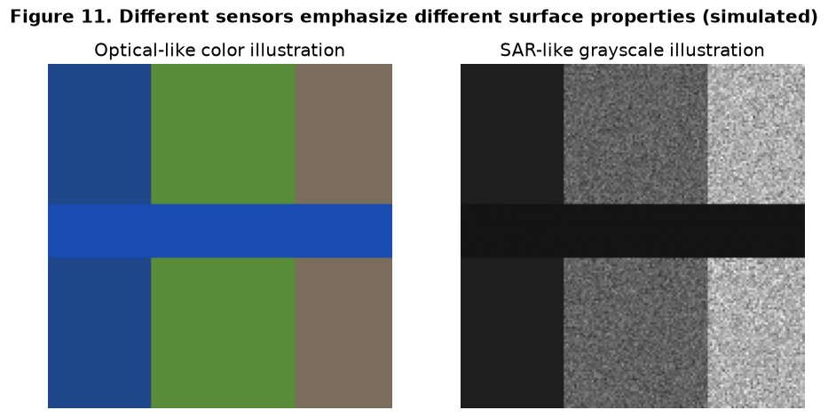
Answer these questions after reviewing the notebook.
geolattice.rsense.sarGeoLattice puts its radar toolkit in geolattice.rsense.sar, which maps to the source package src/rsense/sar/. Import it as part of the remote-sensing namespace:
import geolattice.rsense as rs
from geolattice.rsense import sar # or: from geolattice.rsense.sar import to_db, process_grd, ...Install the SAR extras with the remote-sensing stack:
pip install "geolattice[rsense]" # core raster + optical + SAR helpers
pip install "geolattice[rsense-all]" # SAR, InSAR, lidar, UAV, ML/DL, viz, scalingThe package is organised around the jobs you actually do with radar data:
| Job | What geolattice.rsense.sar provides |
|---|---|
| Read and calibrate | Sentinel-1 GRD/SLC helpers (process_grd, read_grd_subset, calibrate, to_db / from_db), RCM Level-1 readers, NISAR HDF5 readers |
| Clean the image | Speckle filters (boxcar, lee, refined_lee, gamma_map, multitemporal), multilooking, border-noise removal |
| Geometry | Incidence grids, terrain flattening / correction, layover–shadow masks, TOPS burst handling for InSAR prep |
| Polarimetry | Dual-pol features, H/A/α, Stokes, m-χ / m-δ, compact-pol conversion for RCM |
| Change and applications | Log-ratio and omnibus change, flood / rice / ship / oil-spill maps, dual-pol vegetation indices |
| Mission-specific | sentinel1, radarsat, nisar, plus ship detection with AIS matching |
Downstream notebooks in this chapter call these functions on real Sentinel-1, RCM and NISAR products. The hands-on half of this notebook starts with the lighter helpers (to_db, from_db, enl_estimate) and a simulated Sentinel-1 scene.
# Confirm that geolattice.rsense.sar imports and list its top-level submodules.
import geolattice
import geolattice.rsense as rs
from geolattice.rsense import sar
print("geolattice", getattr(geolattice, "__version__", "?"))
print("backend:", rs.get_backend(), "| available:", rs.available_backends())
print("sar package:", sar.__name__)
print("submodules:", ", ".join(
name for name in ("sentinel1", "speckle", "polsar", "change", "apps",
"sar_indices", "radarsat", "nisar", "ship")
if hasattr(sar, name)
))geolattice 0.3.35
backend: cpu | available: ['cpu', 'cuda']
sar package: geolattice.rsense.sar
submodules: sentinel1, speckle, polsar, change, apps, sar_indices, radarsat, nisar, ship# Walk the public API of each src/rsense/sar submodule and summarise it as a table.
import importlib
import inspect
import pandas as pd
SUBMODULES = [
"sentinel1", "speckle", "polsar", "change", "apps",
"sar_indices", "radarsat", "nisar", "ship",
]
rows = []
for name in SUBMODULES:
mod = importlib.import_module(f"geolattice.rsense.sar.{name}")
for attr_name, obj in sorted(vars(mod).items()):
if attr_name.startswith("_"):
continue
if not (inspect.isfunction(obj) or inspect.isclass(obj)):
continue
# keep only objects defined in this submodule (skip re-exports)
if getattr(obj, "__module__", None) != mod.__name__:
continue
kind = "class" if inspect.isclass(obj) else "function"
doc = (inspect.getdoc(obj) or "").split("\n")[0]
rows.append({
"submodule": name,
"kind": kind,
"name": attr_name,
"summary": doc[:110],
})
api = pd.DataFrame(rows)
print(api.groupby("submodule").size().rename("n").to_string())
print()
pd.set_option("display.max_colwidth", 100)
pd.set_option("display.max_rows", 40)
for sub, grp in api.groupby("submodule", sort=False):
print(f"=== geolattice.rsense.sar.{sub} ({len(grp)}) ===")
print(grp[["kind", "name", "summary"]].head(8).to_string(index=False))
if len(grp) > 8:
print(f" ... +{len(grp) - 8} more")
print()submodule
apps 8
change 6
nisar 12
polsar 10
radarsat 21
sar_indices 10
sentinel1 45
ship 21
speckle 7
=== geolattice.rsense.sar.sentinel1 (45) ===
kind name summary
function apply_offset Shift an image or ``(..., y, x)`` stack by whole pixels on its own grid (NaN where uncovered).
function apply_orbit_file ``Apply-Orbit-File``: return a copy of ``ann`` (:func:`read_slc_annotation`) whose orbit
function back_geocode DEM-assisted co-registration (SNAP ``Back-Geocoding``) of a secondary burst to a
function burst_coordinates Fractional (line, sample) in a burst for zero-Doppler times and slant ranges from :func:`geo2rdr`.
function burst_window Range-sample window ``(start, stop)`` of a burst covering lon/lat ``bounds`` (TOPS-Split
function calibrate ``sigma0 = (DN^2 - noise) / A^2``, clipped at a small positive floor.
function common_grid A north-up target grid ``(transform, width, height)`` in ``crs`` covering a lon/lat box,
function coregister_stack Co-register a stack of SLC acquisitions to one reference date (SNAP's back-geocoding of a
... +37 more
=== geolattice.rsense.sar.speckle (7) ===
kind name summary
function boxcar Moving-average (multilook-style) filter.
function enl_estimate Estimate ENL over a homogeneous area: ``mean^2 / var`` of linear intensity.
function gamma_map Gamma-MAP filter (Lopes et al. 1990): homogeneous areas → mean, strong scatterers kept,
function lee Lee (1980) adaptive filter: ``x = m + b (z - m)``, ``b = var_x / var_z``.
function median Median filter (NaN treated as missing by filling with the local mean first).
function multitemporal Quegan & Yu (2001) multi-temporal filter.
function refined_lee Refined Lee filter (Lee 1981) with 7×7 edge-aligned windows.
=== geolattice.rsense.sar.polsar (10) ===
kind name summary
function coherency_t3 Locally averaged 3x3 Pauli-basis coherency matrix T3 from quad-pol SLC channels.
function covariance_c2 Locally averaged 2×2 covariance matrix from complex SLC channels.
function dual_pol_features Intensity-only dual-pol features from GRD/RTC (linear power).
function dual_pol_model_decomposition Eigen-decomposition model-based power decomposition for dual-pol data.
function h_alpha_classify Unsupervised H-α plane classification into Cloude-Pottier zones (codes 1-9).
function h_alpha_dual Dual-pol H/A/α decomposition (Cloude 2007) from C2 elements.
function h_alpha_quad Quad-pol Cloude-Pottier H/A/alpha decomposition (Cloude & Pottier 1997) from T3 elements
function m_chi_decomposition m-χ model-based power decomposition (Raney 2007) of a dual-pol C2 matrix.
... +2 more
=== geolattice.rsense.sar.change (6) ===
kind name summary
function cfar Constant False Alarm Rate detector on linear intensity (bright targets, e.g. ships).
function detections_to_points Group a detection mask into objects → GeoDataFrame of centroids with size and peak.
function log_ratio Log-ratio change image ``10 log10(after / before)`` (dB) or natural log if ``db=False``.
function omnibus_test Likelihood-ratio test for change across k single-polarization intensity images
function pairwise_change Sequential two-date LR tests between consecutive images: change map per interval,
function threshold Global threshold of a change or backscatter image.
=== geolattice.rsense.sar.apps (8) ===
kind name summary
function change_map Two-date increase/decrease map from the log-ratio (Otsu on |ratio| if no threshold).
function flood_map Open-water flood extent from Sentinel-1 (VV or VH).
function hand Height Above Nearest Drainage (HAND; Nobre et al. 2011), in the units of ``dem``.
function mask_to_polygons Vectorize a boolean mask into polygons with pixel count and area.
function oil_spill_detection Dark-spot detection for oil-slick candidates (VV).
function rice_map Paddy rice mapping from a VH time series using the transplanting flood signature.
function ship_detection CFAR ship detection on linear intensity (VH or HV best). ``land_mask`` True = land.
function un_spider_flood_mapping Complete UN-SPIDER Sentinel-1 flood mapping workflow.
=== geolattice.rsense.sar.sar_indices (10) ===
kind name summary
function cross_pol_ratio Cross-pol ratio ``CR = VH / VV`` (linear). Sensitive to crop structure and growth stage.
function dpsvi Dual-Polarization SAR Vegetation Index ``DPSVI = (VV+VH) / VV`` (linear inputs).
function dual_pol_indices All single-date VV/VH indices and derived metrics in one call.
function polarimetric_rvi Polarimetric RVI ``PRVI = (1 - VV/(VH+VV)) * VH``, algebraically ``VH^2/(VH+VV)``
function radar_forest_degradation_index Radar Forest Degradation Index ``RFDI = (VV-VH) / (VV+VH)`` (linear inputs).
function radar_vegetation_index Dual-pol Radar Vegetation Index ``RVI = 4*VH / (VV+VH)`` (linear inputs).
function rvi4s1 Sentinel-1 RVI4S1 ``= sqrt(VV/(VV+VH)) * 4*VH/(VV+VH)`` (linear inputs).
function sentinel_normalized_index Sentinel Normalized Index ``SNI = (VH-VV) / (VH+VV)`` (linear inputs); ``SNI = -RFDI``
... +2 more
=== geolattice.rsense.sar.radarsat (21) ===
kind name summary
function calibrate_rcm RCM Level-1 GRD radiometric calibration: ``(DN^2 + offset) / gain``.
function compact_pol_mchi m-chi decomposition of RCM compact-pol data into surface, volume and double-bounce power.
function find_rcm_files Locate the files of one polarisation inside an unzipped RCM Level-1 product folder.
function fit_incidence_slope Least-squares slope of backscatter (dB) against incidence angle (degrees) over the
function gamma0_to_sigma0 RCM-ARD's own terrain-corrected ``sigma0 = gamma0 * ratio``.
function interpolate_rcm_lut Interpolate a sparse RCM range-only gain LUT (:func:`read_rcm_lut`) onto ``width``
function interpolate_rcm_noise Stitch RCM per-beam noise-level segments (:func:`read_rcm_noise_levels`) onto ``width``
function normalize_incidence Bring backscatter (dB) to a reference incidence angle with a linear slope:
... +13 more
=== geolattice.rsense.sar.nisar (12) ===
kind name summary
function gcov_indices Calculate GCOV ratios and RVI from linear powers.
function geocode_l1 Quickly interpolate a Level-1 layer to a regular map grid from geolocation arrays.
function gslc_interferogram Form a GSLC pair interferogram and local coherence on a shared map grid.
function inspect_hdf5 List datasets below an HDF5 group with shape, dtype, and attributes.
function process_offsets Quality-filter NISAR ROFF/GOFF offsets and derive ground-range and EN displacement.
function process_rifg Mask a RIFG by coherence and optionally multilook the complex interferogram.
function process_unwrapped_phase Quality-mask, reference, optionally correct ionosphere, and convert phase to LOS displacement.
function read_identification Read NISAR identification metadata and attributes without loading raster arrays.
... +4 more
=== geolattice.rsense.sar.ship (21) ===
kind name summary
function ais_at_time One position per vessel at the SAR time ``t0``: linear interpolation between the last
function azimuth_displacement_m Expected along-track image displacement (m) of moving vessels: ``R * v_r / V``, with
function azimuth_sublooks Azimuth sub-looks of one IW SLC burst. The burst is first deramped with
function cfar Constant false alarm rate detector on linear intensity (e.g. sigma0 VH).
function cfar_tiled :func:`cfar` over a large image in overlapping tiles (overlap = half the outer window),
function coherence_at_points Maximum sub-look coherence near each lon/lat point (e.g. GRD CFAR candidates).
function detect_ships_grd CFAR ship detection on a Sentinel-1 IW GRDH AOI, in native radar geometry (10 m).
function detection_scores Precision, recall and F1 from a :func:`match_points` result.
... +13 more
All notebooks live in Tutorials/notebooks/08_remote_sensing/08_03_radar/. Work through them in order within each mission block.
| Notebook | Topic |
|---|---|
09_03_00_sar_fundamentals.ipynb |
SAR fundamentals, visual walkthrough, and geolattice.rsense.sar (this notebook) |
| Notebook | Topic |
|---|---|
09_03_01_00_sentinel_1_sar.ipynb |
Sentinel-1 SAR introduction |
09_03_01_01_sentinel_1_sar_processing.ipynb |
Sentinel-1 SAR processing |
09_03_01_02_sentinel_1_grd_processing.ipynb |
Sentinel-1 GRD processing |
09_03_01_03_sentinel_1_multitemporal_grd_time_series_deforestation_around_the_rohingya_camps_2017.ipynb |
Multitemporal GRD time series (Rohingya camps, 2017) |
09_03_01_04_topographic_insar_a_dem_from_a_sentinel_1_slc_pair.ipynb |
Topographic InSAR: DEM from a Sentinel-1 SLC pair |
09_03_01_05_differential_insar_dinsar.ipynb |
Differential InSAR (DInSAR) |
09_03_01_06_sbas_small_baseline_subset_insar.ipynb |
SBAS (Small Baseline Subset) InSAR |
09_03_01_07_persistent_scatterer_insar_ps_insar.ipynb |
Persistent Scatterer InSAR (PS-InSAR) |
09_03_01_08_dual_pol_polarimetric_decomposition_slc.ipynb |
Dual-pol polarimetric decomposition (SLC) |
09_03_01_09_interferometric_coherence_of_slcs.ipynb |
Interferometric coherence of SLCs |
09_03_01_10_sentinel_1_based_indices.ipynb |
Sentinel-1 based indices |
| Notebook | Topic |
|---|---|
09_03_02_00_radarsat_constellation_mission_rcm.ipynb |
RCM introduction |
09_03_02_01_radarsat_constellation_mission_rcm_processing.ipynb |
RCM processing |
09_03_02_02_radarsat_grd_data.ipynb |
RADARSAT GRD data |
09_03_02_03_radarsat_constellation_mission_rcm_insar_processing.ipynb |
RCM InSAR processing |
09_03_02_04_radarsat_polarimetric_sar_polsar.ipynb |
RADARSAT polarimetric SAR (PolSAR) |
09_03_02_05_compact_polarimetry_cp.ipynb |
Compact polarimetry (CP) |
| Notebook | Topic |
|---|---|
09_03_03_00_nisar_nasa_isro_synthetic_aperture_radar.ipynb |
NISAR introduction |
09_03_03_01_nisar_processing.ipynb |
NISAR processing |
09_03_03_02_nisar_rslc_range_doppler_single_look_complex_processing.ipynb |
NISAR RSLC (range-Doppler SLC) |
09_03_03_03_nisar_gslc_geocoded_single_look_complex_processing.ipynb |
NISAR GSLC (geocoded SLC) |
09_03_03_04_nisar_gcov_geocoded_polarimetric_covariance_processing.ipynb |
NISAR GCOV (geocoded polarimetric covariance) |
09_03_03_05_nisar_gunw_geocoded_unwrapped_interferogram.ipynb |
NISAR GUNW (geocoded unwrapped interferogram) |
| Data | Type |
|---|---|
| Sentinel-1 VV backscatter, 9 Mar 2015, 20 m, terrain-corrected (pyroSAR test product) | Real |
| Sentinel-1B GRD annotation, 23 Dec 2021 (central Italy) | Real metadata |
| Landsat 7 composite + 90 m DEM, Mono Lake / Long Valley, California | Real landscape used by the simulator |
Sentinel-1-like scenes from sar_simulator.py |
Simulated from the real landscape (see below) |
About the simulator. Real Sentinel-1 time series and interferometric pairs are tens of gigabytes and need online accounts, which were unavailable when these notebooks were executed.
sar_simulator.py(shipped with the notebooks, fully commented) therefore generates Sentinel-1-like data from a real land-cover map and real terrain, applying the physics taught here. Real-data loaders (rs.sar.load_rtc, ASF, HyP3) are shown underRUN_ONLINE = Trueand accept the same downstream code.
Installation. This notebook needs installation option 5 (core, spatial analysis, spatial statistics, geostatistics and remote sensing): pip install "geolattice[remote-sensing]". See “Installation options” in the GeoLattice README.
import warnings # control warning messages
warnings.filterwarnings("ignore") # hide library warnings to keep the output short
import numpy as np # arrays
import pandas as pd # tables
import xarray as xr # labelled rasters (DataArray, Dataset)
import rasterio # GeoTIFF reading
import matplotlib.pyplot as plt # figures
from scipy import stats # probability distributions (Rayleigh, exponential, gamma)
import geolattice.rsense as rs # GeoLattice remote sensing: reading, SAR helpers and plotting
from geolattice.rsense.sar import sentinel1 as s1 # Sentinel-1 annotation readers
from geolattice.rsense.get_images import get_images, search_images # search and download satellite images
import sar_simulator as sim # local helper module that simulates SAR backscatter for the study area
rasterio.Env(CPL_LOG="/dev/null").__enter__() # silence GDAL log messages for the whole session
plt.rcParams.update({"figure.dpi": 110}) # figure resolution
RUN_ONLINE = False # set to True to run the online search and download example at the endfrom pathlib import Path # file paths
import urllib.request # download files over HTTP
DATA = Path("../../../../Data/08_remote_sensing/08_03_radar") # data folder next to the notebook
DATA.mkdir(exist_ok=True) # create it if needed
GH = "https://github.com/opengeos/datasets/releases/download" # base URL of the opengeos datasets release
RAW = "https://raw.githubusercontent.com" # base URL for raw GitHub files
# folder of a real Sentinel-1B GRD annotation in the sarsen test data
S1 = (f"{RAW}/bopen/sarsen/main/tests/data/"
"S1B_IW_GRDH_1SDV_20211223T051122_20211223T051147_030148_039993_5371.SAFE/annotation")
N1 = "s1b-iw-grd-vv-20211223t051122-20211223t051147-030148-039993-001" # file name of the VV annotation XML
URLS = { # file name -> download URL
"landsat.tif": f"{GH}/raster/landsat.tif", # Landsat 7 composite, central Sierra Nevada
"dem_90m.tif": f"{GH}/book/dem_90m.tif", # 90 m DEM, same region
# Real Sentinel-1 VV backscatter (dB), terrain-corrected with GAMMA, 20 m (pyroSAR test data)
# real Sentinel-1 VV backscatter (dB), terrain-corrected, 20 m
"s1_vv_db.tif": f"{RAW}/johntruckenbrodt/pyroSAR/main/tests/data/S1A__IW___A_20150309T173017_VV_grd_mli_geo_norm_db.tif",
# Real Sentinel-1B GRD annotation XML (23 Dec 2021, central Italy): geometry and acquisition
# metadata, read below with geolattice.rsense.sar.sentinel1's own annotation-XML parsers rather
# than by hand. (Section 2 of 07_03_02_sentinel1_grd.ipynb covers the matching calibration
# and noise XML -- the calibration LUT reading they drive -- in depth.)
"s1_annotation.xml": f"{S1}/{N1}.xml", # the annotation XML
}
def fetch(name): # download helper
"""Download a tutorial dataset once and return its local path."""
path = DATA / name # local path of the file
if not path.exists(): # download only if the file is not there yet
print(f"Downloading {name} ...") # progress message
urllib.request.urlretrieve(URLS[name], path) # copy the URL to the local path
return path # return the local path either wayLonger wavelengths penetrate deeper into vegetation, dry soil and snow, and “see” surfaces as smoother. The Rayleigh criterion calls a surface smooth (mirror-like, dark) when its height variation is below λ / (8 cos θ).
bands = pd.DataFrame([ # radar bands, their wavelengths, missions and what they mainly interact with
("X", 3.1, "TerraSAR-X, COSMO-SkyMed, ICEYE, Capella", "Leaves, crop tops, ice surface"),
("C", 5.55, "Sentinel-1, RADARSAT Constellation", "Upper canopy, crops, soil moisture"),
("S", 9.4, "NISAR (S-band), NovaSAR", "Crowns and branches"),
("L", 24.0, "ALOS-2/4, NISAR (L-band), SAOCOM", "Branches, trunks, deforming ground"),
("P", 69.0, "BIOMASS", "Trunks and ground beneath forest"),
], columns=["Band", "Wavelength (cm)", "Missions", "Mainly interacts with"]) # column names
theta = 35 # incidence angle (degrees) used for the roughness criterion
# Rayleigh criterion: a surface looks smooth if its height variation is below lambda / (8 cos theta)
bands["Smooth if height variation < (cm)"] = (bands["Wavelength (cm)"] / (8 * np.cos(np.radians(theta)))).round(2)
bands # show the table| Band | Wavelength (cm) | Missions | Mainly interacts with | Smooth if height variation < (cm) | |
|---|---|---|---|---|---|
| 0 | X | 3.10 | TerraSAR-X, COSMO-SkyMed, ICEYE, Capella | Leaves, crop tops, ice surface | 0.47 |
| 1 | C | 5.55 | Sentinel-1, RADARSAT Constellation | Upper canopy, crops, soil moisture | 0.85 |
| 2 | S | 9.40 | NISAR (S-band), NovaSAR | Crowns and branches | 1.43 |
| 3 | L | 24.00 | ALOS-2/4, NISAR (L-band), SAOCOM | Branches, trunks, deforming ground | 3.66 |
| 4 | P | 69.00 | BIOMASS | Trunks and ground beneath forest | 10.53 |
At C-band a field with 1 cm clods already looks rough (bright), while at L-band it appears smooth. Calm water is smooth at every wavelength, which is why lakes are black in SAR images.
SAR looks sideways. Range (across-track) resolution comes from pulse bandwidth and is finer in ground range at steeper incidence; azimuth (along-track) resolution comes from synthesising a long antenna, ideally half the physical antenna length, independent of range.
c = 299_792_458.0 # speed of light (m/s)
bw = 56.5e6 # Sentinel-1 IW range bandwidth (Hz), sub-swath IW1
slant_res = c / (2 * bw) # slant-range resolution = c / (2 x bandwidth)
inc = np.array([30, 35, 40, 45]) # a range of incidence angles (degrees)
# ground-range resolution = slant-range resolution / sin(incidence)
pd.DataFrame({"incidence (°)": inc, "slant-range resolution (m)": round(slant_res, 2),
"ground-range resolution (m)": (slant_res / np.sin(np.radians(inc))).round(2)})| incidence (°) | slant-range resolution (m) | ground-range resolution (m) | |
|---|---|---|---|
| 0 | 30 | 2.65 | 5.31 |
| 1 | 35 | 2.65 | 4.63 |
| 2 | 40 | 2.65 | 4.13 |
| 3 | 45 | 2.65 | 3.75 |
Because the image is built from distance to the sensor, terrain distorts it:
Let’s trace these along a real west-east profile across the Sierra Nevada escarpment, with the radar looking east (ascending pass) at 35°.
# simulated scene (elevation, land cover) and the Landsat image of the same area
scene, optical = sim.study_area(fetch("landsat.tif"), fetch("dem_90m.tif"))
row = int(np.nanargmax(np.nanstd(scene.elevation.values, axis=1))) # most rugged row
z = scene.elevation.isel(y=row).values.astype(float) # elevation profile along that row
x = (scene.x.values - scene.x.values[0]).astype(float) # distance from the first pixel along the row (m)
ok = np.isfinite(z); x, z = x[ok], z[ok] # keep only valid elevations
# slant range, layover and shadow along a terrain profile for one incidence angle
def profile_geometry(x, z, theta_deg):
th = np.radians(theta_deg) # incidence angle in radians
r = x * np.sin(th) - z * np.cos(th) # slant-range coordinate (far-field)
p = x * np.cos(th) + z * np.sin(th) # constant along a beam line
layover = np.r_[False, np.diff(r) < 0] # layover where slant range decreases as ground distance increases
# shadow where the terrain is hidden behind earlier terrain along the beam
shadow = np.r_[False, p[1:] < np.maximum.accumulate(p)[:-1]]
return r, layover, shadow # return the three arrays
fig, axes = plt.subplots(2, 1, figsize=(12, 6.5)) # terrain (top) and slant range (bottom)
for th, ls in [(20, ":"), (35, "-"), (45, "--")]: # three incidence angles, each with its own line style
r, lay, sh = profile_geometry(x, z, th) # geometry for this angle
if th == 35: # draw the terrain and its distortions only once, for 35 degrees
axes[0].plot(x / 1000, z, "k-", lw=1) # terrain profile
axes[0].plot(x[lay] / 1000, z[lay], "r.", ms=4, label="layover") # layover points in red
axes[0].plot(x[sh] / 1000, z[sh], ".", color="grey", ms=4, label="shadow") # shadow points in grey
# slant range against ground distance, with the layover and shadow shares
axes[1].plot(x / 1000, (r - r[0]) / 1000, ls, label=f"θ = {th}°: {lay.mean():.1%} layover, {sh.mean():.1%} shadow")
# labels and legend of the top panel
axes[0].set(ylabel="Elevation (m)", title="Real terrain profile (radar looking east, θ = 35°)"); axes[0].legend()
axes[1].set(xlabel="Ground distance (km)", ylabel="Slant range (km)", # labels of the bottom panel
title="Where slant range decreases with ground distance, the image folds over (layover)")
axes[1].legend(fontsize=8); plt.tight_layout(); plt.show() # legend, arrange and draw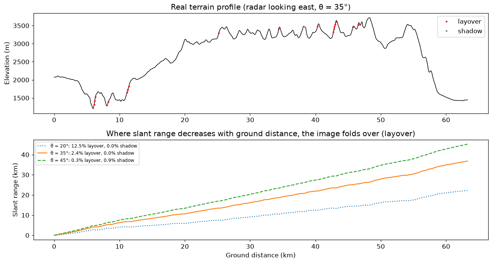
Steep incidence (20°) causes much more layover; shallow incidence (45°) causes more shadow. Sentinel-1 IW spans roughly 30-46°, a compromise. In mountains, combining ascending and descending passes (looking east and west) fills many gaps.
| Mechanism | Where | Signature |
|---|---|---|
| Specular / surface | Calm water, smooth bare soil, roads | Dark; drops quickly with incidence angle |
| Rough surface | Ploughed fields, rock | Moderate; VV ≫ VH |
| Volume | Forest canopies, crops, dry snow | Bright VH (depolarisation), weak angle dependence |
| Double bounce | Buildings, flooded forest, ships | Very bright (corner reflector) |
The simulator encodes typical C-band values for each class. Their dependence on incidence angle explains why images must be normalised before comparing near and far range.
# reference backscatter per land-cover class: VV, VH and the angular exponent
ref = pd.DataFrame(sim.SIGMA_REF, index=["VV at 35° (dB)", "VH at 35° (dB)", "angular exponent n"]).T
ref.index = [sim.CLASSES[k] for k in ref.index] # class codes -> class names
theta = np.linspace(20, 50, 61) # incidence angles from 20 to 50 degrees
fig, ax = plt.subplots(figsize=(8, 4)) # one panel
for k, (vv, vh, n) in sim.SIGMA_REF.items(): # one curve per class
if k == 5: # skip class 5
continue
# backscatter falls with incidence angle following cos(theta)^n
s0 = vv + 10 * n * np.log10(np.cos(np.radians(theta)) / np.cos(np.radians(35)))
ax.plot(theta, s0, label=sim.CLASSES[k], lw=2) # draw the curve
# shade the Sentinel-1 IW incidence range
ax.axvspan(30, 46, color="grey", alpha=0.1, label="Sentinel-1 IW range")
ax.set(xlabel="Incidence angle (°)", ylabel="σ⁰ VV (dB)", title="Backscatter vs incidence angle") # labels
ax.legend(); plt.show() # legend and draw
ref # show the reference table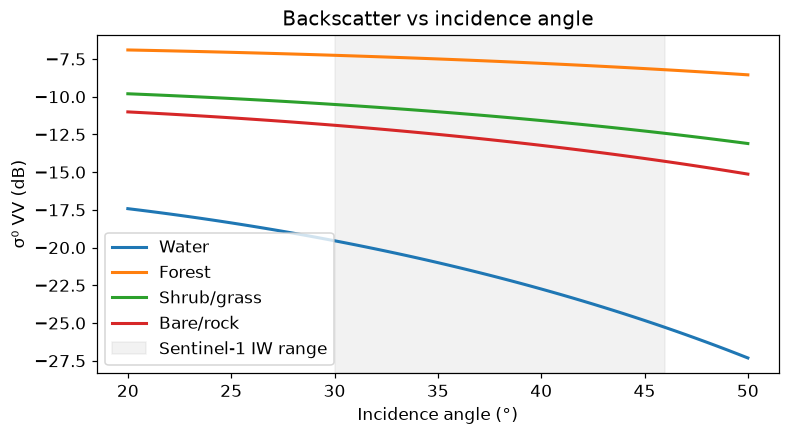
| VV at 35° (dB) | VH at 35° (dB) | angular exponent n | |
|---|---|---|---|
| Water | -21.0 | -29.0 | 6.0 |
| Forest | -7.5 | -13.0 | 1.0 |
| Shrub/grass | -11.0 | -18.0 | 2.0 |
| Bare/rock | -12.5 | -22.0 | 2.5 |
| Snow/ice | -14.0 | -22.0 | 2.0 |
Each resolution cell holds many scatterers whose echoes add with random phases. Their sum is a random walk in the complex plane, so even a perfectly uniform field shows grainy brightness: amplitude follows a Rayleigh distribution and intensity an exponential distribution, with standard deviation equal to the mean. Speckle is therefore multiplicative, not additive noise.
rng = np.random.default_rng(0) # random generator with a fixed seed
N, pixels = 50, 200_000 # 50 scatterers per pixel, 200,000 pixels
# each pixel sums 50 echoes with random phase: fully developed speckle
field = (np.exp(1j * rng.uniform(0, 2 * np.pi, (pixels, N))) / np.sqrt(N)).sum(1)
amp, inten = np.abs(field), np.abs(field) ** 2 # amplitude and intensity of the summed field
fig, axes = plt.subplots(1, 3, figsize=(15, 3.8)) # three panels
# the running sum of one pixel's echoes in the complex plane (a random walk)
axes[0].plot(np.cumsum(np.exp(1j * rng.uniform(0, 2 * np.pi, N))).real,
np.cumsum(np.exp(1j * rng.uniform(0, 2 * np.pi, N))).imag, "-o", ms=2)
axes[0].set(title=f"Random walk of {N} scatterer echoes", aspect="equal") # title and equal axes
axes[1].hist(amp, 100, density=True, alpha=0.6, label="simulated") # histogram of the simulated amplitude
# compare with the theoretical Rayleigh distribution
a = np.linspace(0, 3.5, 200); axes[1].plot(a, stats.rayleigh(scale=np.sqrt(0.5)).pdf(a), "k", label="Rayleigh")
axes[1].set(title="Amplitude", xlabel="|E|"); axes[1].legend() # labels and legend
axes[2].hist(inten, 100, density=True, alpha=0.6, label="simulated") # histogram of the simulated intensity
# compare with the theoretical exponential distribution
i = np.linspace(0, 6, 200); axes[2].plot(i, stats.expon().pdf(i), "k", label="exponential")
# the ratio std/mean is 1 for single-look intensity
axes[2].set(title=f"Intensity (std/mean = {inten.std() / inten.mean():.2f})", xlabel="|E|²"); axes[2].legend()
plt.tight_layout(); plt.show() # arrange and draw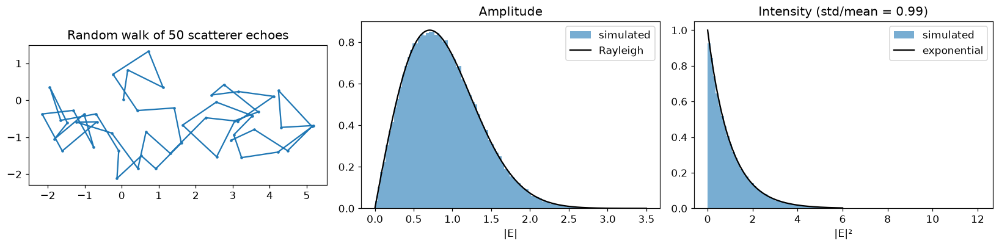
Multilooking averages L independent looks, reducing the relative standard deviation to 1/√L. The averaged intensity follows a Gamma distribution, and the equivalent number of looks ENL = mean² / variance measured over a homogeneous area tells you how much speckle remains.
fig, ax = plt.subplots(figsize=(8, 4)) # one panel
x = np.linspace(0, 3, 300) # normalised intensity axis
for L in [1, 4, 16]: # average 1, 4 and 16 independent looks
# group the pixels in sets of L and average each set
looks = inten[: pixels // L * L].reshape(-1, L).mean(1)
# histogram with the estimated equivalent number of looks (ENL)
ax.hist(looks, 120, density=True, histtype="step", lw=1.5, label=f"L = {L}: ENL = {rs.sar.enl_estimate(looks):.1f}")
ax.plot(x, stats.gamma(L, scale=1 / L).pdf(x), "k:", lw=1) # theoretical gamma distribution for L looks
# labels
ax.set(xlim=(0, 3), xlabel="Normalised intensity", title="Multilooking narrows the distribution (dotted: Gamma pdf)")
ax.legend(); plt.show() # legend and draw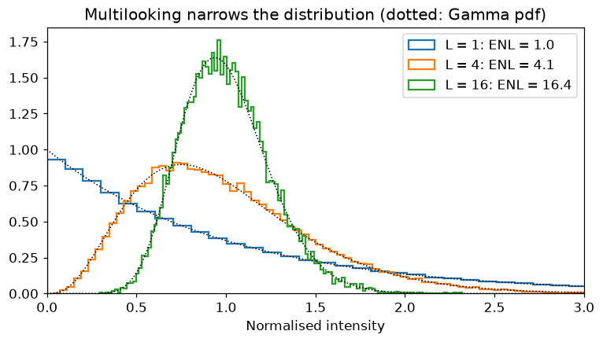
This real VV image (20 m, already terrain-corrected and in dB) comes from the pyroSAR test data. SAR intensities span several orders of magnitude, so they are usually displayed in decibels, dB = 10·log10(σ⁰), but averaged and filtered in linear units: averaging dB values gives the geometric mean and biases results low.
# real Sentinel-1 VV backscatter in dB, as a 2-D DataArray
db = rs.read(fetch("s1_vv_db.tif")).squeeze("band", drop=True)
db = db.where(db > -60) # mask no-data values
lin = rs.sar.from_db(db) # dB -> linear power
fig, axes = plt.subplots(1, 3, figsize=(16, 4)) # three panels
rs.viz.plot_raster(db, ax=axes[0], cmap="gray", vmin=-25, vmax=0, title="VV (dB)") # the image in dB
# the same image on a linear scale
rs.viz.plot_raster(lin, ax=axes[1], cmap="gray", vmin=0, vmax=0.3, title="VV (linear)")
# histogram of the dB values
axes[2].hist(db.values.ravel(), 100, color="C0"); axes[2].set(xlabel="dB", title="Histogram in dB")
for a in axes[:2]: a.set_xticks([]); a.set_yticks([]) # no ticks on the two images
plt.tight_layout(); plt.show() # arrange and draw
# averaging in dB is not the same as averaging linear power
print(f"Mean of dB values: {float(db.mean()):.2f} dB | dB of the linear mean: {float(rs.sar.to_db(lin.mean())):.2f} dB")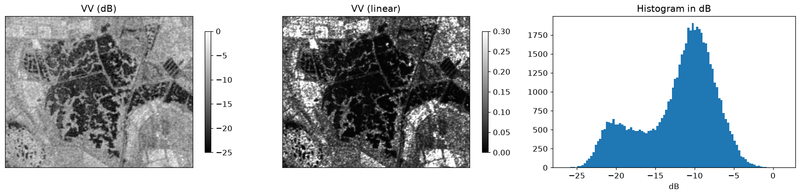
Mean of dB values: -12.12 dB | dB of the linear mean: -10.11 dB# ENL in the most homogeneous 15 × 15 window (lowest coefficient of variation)
w = 15 # window size (pixels)
best = (np.inf, None) # (lowest coefficient of variation, position) found so far
L = lin.values # linear backscatter as an array
for r in range(0, L.shape[0] - w, 5): # slide the window every 5 rows ...
for c in range(0, L.shape[1] - w, 5): # ... and every 5 columns
blk = L[r:r + w, c:c + w] # the 15 x 15 block
if np.isnan(blk).any(): # skip blocks with missing values
continue
cv = blk.std() / blk.mean() # coefficient of variation of the block
if cv < best[0]: # keep the most homogeneous block
best = (cv, (r, c)) # keep its CV and position
r, c = best[1] # its top-left corner
# ENL of that block
print(f"Most homogeneous window at row {r}, col {c}: ENL = {rs.sar.enl_estimate(L[r:r + w, c:c + w]):.1f}")
# for comparison
print("Nominal ENL of Sentinel-1 IW GRDH: 4.4 (this product was further multilooked and resampled to 20 m)")Most homogeneous window at row 195, col 85: ENL = 11.6
Nominal ENL of Sentinel-1 IW GRDH: 4.4 (this product was further multilooked and resampled to 20 m)The simulator places a radar over the real terrain of Mono Lake, Long Valley caldera and the Sierra Nevada crest. Compare the optical image with simulated VV and VH, and see where geometry makes SAR unusable.
incidence = sim.incidence_grid(scene.elevation) # 30° (west) → 46° (east), looking east
# local incidence angle and layover and shadow masks from the DEM
local_inc, layover, shadow = sim.local_geometry(scene.elevation, incidence)
# simulated VV backscatter with speckle
vv = sim.speckle(sim.backscatter(scene.landcover, local_inc, "VV", incidence=incidence), seed=1)
# simulated VH backscatter with speckle
vh = sim.speckle(sim.backscatter(scene.landcover, local_inc, "VH", incidence=incidence), seed=2)
fig, axes = plt.subplots(2, 3, figsize=(16, 10)) # 2 x 3 panels
# the real Landsat image in colour infrared
rs.viz.plot_rgb(optical, ["nir", "red", "green"], ax=axes[0, 0], title="Landsat colour infrared (real)")
# the land-cover classes the simulation uses
rs.viz.plot_raster(scene.landcover.where(scene.landcover > 0), ax=axes[0, 1], title="Land cover (from Landsat)",
categorical={1: ("Water", "#2166ac"), 2: ("Forest", "#1b7837"), 3: ("Shrub/grass", "#a6d96a"),
4: ("Bare/rock", "#bababa")})
# local incidence angle
rs.viz.plot_raster(local_inc, ax=axes[0, 2], cmap="RdBu_r", vmin=0, vmax=90, title="Local incidence angle (°)")
# simulated VV in dB
rs.viz.plot_raster(rs.sar.to_db(vv), ax=axes[1, 0], cmap="gray", vmin=-25, vmax=0, title="Simulated VV (dB)")
# simulated VH in dB
rs.viz.plot_raster(rs.sar.to_db(vh), ax=axes[1, 1], cmap="gray", vmin=-32, vmax=-8, title="Simulated VH (dB)")
# 0 = usable, 1 = layover, 2 = shadow
geo = (layover.astype(int) + 2 * shadow.astype(int)).where(scene.landcover > 0)
rs.viz.plot_raster(geo, ax=axes[1, 2], title="Geometric distortion", # geometric distortion map
categorical={0: ("usable", "#f0f0f0"), 1: ("layover", "#d7191c"), 2: ("shadow", "#2c7bb6")})
for a in axes.ravel(): a.set_xticks([]); a.set_yticks([]) # no ticks
plt.tight_layout(); plt.show() # arrange and draw
# share of layover and shadow pixels
print(f"Layover: {float(layover.mean()):.2%} of pixels, shadow: {float(shadow.mean()):.2%}")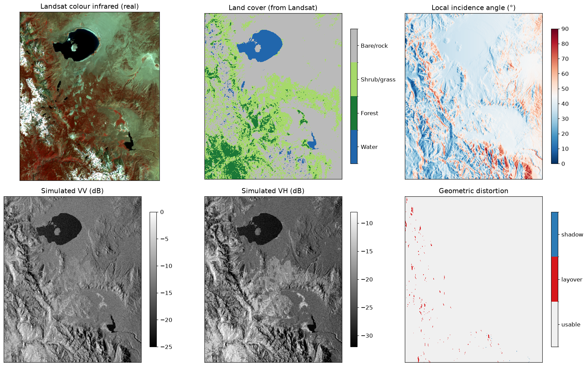
Layover: 0.41% of pixels, shadow: 0.01%Slopes facing the radar (west-facing) are bright and compressed; lakes are black; forest stands out in VH because volume scattering depolarises the signal. Geometry, not land cover, dominates the brightness in the mountains, which is why terrain correction (see the Sentinel-1 GRD notebook) comes first.
pd.DataFrame([ # Sentinel-1 acquisition modes as a table
("IW (Interferometric Wide)", "250 km", "5 × 20 m", "VV+VH (land), HH+HV (polar)", "Default over land"),
("EW (Extra Wide)", "400 km", "20 × 40 m", "HH+HV", "Sea ice, oceans"),
("SM (Stripmap)", "80 km", "5 × 5 m", "Dual", "Small islands, emergencies"),
("WV (Wave)", "20 × 20 km vignettes", "5 × 5 m", "Single", "Ocean waves"),
], columns=["Mode", "Swath", "Resolution", "Polarisation", "Use"]) # column names| Mode | Swath | Resolution | Polarisation | Use | |
|---|---|---|---|---|---|
| 0 | IW (Interferometric Wide) | 250 km | 5 × 20 m | VV+VH (land), HH+HV (polar) | Default over land |
| 1 | EW (Extra Wide) | 400 km | 20 × 40 m | HH+HV | Sea ice, oceans |
| 2 | SM (Stripmap) | 80 km | 5 × 5 m | Dual | Small islands, emergencies |
| 3 | WV (Wave) | 20 × 20 km vignettes | 5 × 5 m | Single | Ocean waves |
import xml.etree.ElementTree as ET # XML parsing from the standard library
xml_path = fetch("s1_annotation.xml") # download (once) the real annotation XML
# geolattice.rsense.sar.sentinel1's own annotation-XML readers, rather than hand-rolled ElementTree
# lookups: the sparse geolocationGridPointList (incidence angle, lat/lon, height) and the
# platform heading / pass direction -- see Section 3's local_incidence_angle, which needs
# exactly these two.
# the sparse geolocation grid: line and pixel positions and the values at each point
lines, pixels, grid = s1.read_geolocation_grid(xml_path)
# platform heading and pass direction (ascending or descending)
heading, pass_dir = s1.read_platform_heading(xml_path)
incs = grid["incidenceAngle"] # incidence angle at every grid point
# A handful of scalar product fields sentinel1.py has no dedicated reader for (it focuses on
# what the processing chain needs: geometry and calibration, not every header field) -- read
# directly from the same annotation XML.
root = ET.parse(xml_path).getroot() # root element of the XML document
info = { # a few header fields, read directly from the XML
"mission/product": "Sentinel-1B IW GRDH (real annotation)",
"start time": root.find(".//adsHeader/startTime").text, # acquisition start time
"pass": pass_dir,
"platform heading (°)": round(heading, 2),
"radar frequency (GHz)": float(root.find(".//radarFrequency").text) / 1e9, # radar frequency in GHz
# wavelength = c / frequency, in cm
"wavelength (cm)": round(299_792_458 / float(root.find(".//radarFrequency").text) * 100, 3),
# pixel spacing
"pixel spacing range × azimuth (m)": f"{root.find('.//rangePixelSpacing').text} × {root.find('.//azimuthPixelSpacing').text}",
# image size
"image size (lines × samples)": f"{root.find('.//numberOfLines').text} × {root.find('.//numberOfSamples').text}",
# range of incidence angles across the swath
"incidence angle range (°)": f"{np.nanmin(incs):.1f}: {np.nanmax(incs):.1f}",
# size of the geolocation grid
"geolocation grid": f"{lines.size} lines × {pixels.size} pixels (sparse control grid)",
}
pd.Series(info) # show as a listmission/product Sentinel-1B IW GRDH (real annotation)
start time 2021-12-23T05:11:22.594441
pass Descending
platform heading (°) 193.69
radar frequency (GHz) 5.405
wavelength (cm) 5.547
pixel spacing range × azimuth (m) 1.000000e+01 × 1.000000e+01
image size (lines × samples) 16705 × 26102
incidence angle range (°) 30.3: 46.1
geolocation grid 10 lines × 21 pixels (sparse control grid)
dtype: objectif RUN_ONLINE: # only when the online example is switched on
bbox = (-119.3, 37.45, -118.6, 38.15) # same Long Valley / Mono Lake area as Section 7
dates = ("2024-06-01", "2024-06-30") # one month of acquisitions
# Search first (free -- lists real scenes without downloading anything)
# search the Planetary Computer catalogue for Sentinel-1 RTC scenes (no download)
found = search_images(bbox=bbox, dates=dates, source="planetary",
collection="sentinel-1-rtc", s1_orbit="ascending")
print(f"{len(found.scenes)} scene(s):", [sc["id"] for sc in found.scenes]) # the scene IDs that were found
# Download the clearest scene's VV/VH, clipped to the AOI, the same workflow GeoLattice
# Explorer's sidebar drives (geolattice.rsense.get_images)
rtc_files = sorted(Path("../../../../Data/08_remote_sensing/08_03_radar/s1_rtc_long_valley").rglob("*.tif")) # files of an earlier download
if rtc_files: # downloaded before: read them from the local drive
print("Already on the local drive:", [str(p) for p in rtc_files]) # their paths
else: # not on disk yet
# download VV and VH of the clearest scene, clipped to the box
saved = get_images("../../../../Data/08_remote_sensing/08_03_radar/s1_rtc_long_valley", bbox=bbox, dates=dates, source="planetary",
collection="sentinel-1-rtc", s1_orbit="ascending",
bands=["vv", "vh"], mode="clip", clearest=True) # only the requested bands, clipped
print(saved.files) # paths of the saved files
# Or load straight into an in-memory Dataset without saving files first
# or load the scenes directly into memory as an xarray Dataset
s1_rtc = rs.sar.load_rtc(bbox, dates, orbit="ascending")
print(s1_rtc) # show the DatasetKey points
geolattice.rsense.sar (src/rsense/sar) covers Sentinel-1, RCM and NISAR processing, speckle, polarimetry, change detection and applications.geolattice.rsense functions used: rs.read, rs.sar.to_db/from_db, rs.sar.enl_estimate, rs.viz.plot_raster, rs.lidar.slope/aspect (inside the simulator); geolattice.rsense.sar.sentinel1’s read_geolocation_grid, read_platform_heading and load_rtc; geolattice.rsense.get_images’s search_images and get_images.
Exercises
src/rsense/sar module table, name the submodule you would use for (a) refined Lee filtering, (b) RCM compact-pol m-χ, and (c) NISAR GCOV indices.